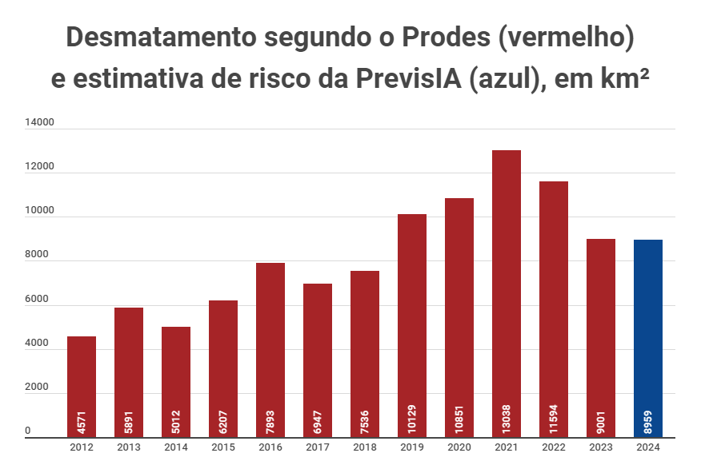

Conceito Geral:
O desmatamento é um problema ambiental de grande magnitude que afeta diversas regiões do mundo. Consiste na remoção de árvores de forma indiscriminada, seja para a expansão da agricultura, criação de pastagens, exploração madeireira ou urbanização. Essa prática tem impactos devastadores sobre os ecossistemas, levando à perda de biodiversidade, degradação do solo, assoreamento de rios e alterações climáticas.
- Dados do desmatamento em 2024:
O que acasiona isso ?
Uma das regiões mais afetadas pelo desmatamento é a Amazônia, considerada a maior floresta tropical do mundo. O avanço do desmatamento na Amazônia tem sido impulsionado principalmente pela expansão da fronteira agrícola e pela exploração ilegal de madeira. Além disso, projetos de infraestrutura, como estradas e hidrelétricas, também têm contribuído para a destruição da floresta e o consequente impacto sobre o meio ambiente e as comunidades locais.
Consequências:
Os efeitos do desmatamento são sentidos em escala global. A perda de florestas tropicais, por exemplo, contribui significativamente para o aumento das emissões de gases de efeito estufa, intensificando o aquecimento global e as mudanças climáticas. Além disso, a destruição de habitats naturais coloca em risco a sobrevivência de inúmeras espécies de plantas e animais, muitas das quais ainda nem foram descobertas pela ciência.
Solução:
Diante desse cenário, é urgente adotar medidas eficazes para combater o desmatamento e promover a conservação das florestas. Isso inclui a implementação de políticas de proteção ambiental, o fortalecimento da fiscalização e o estímulo a práticas sustentáveis de manejo florestal e agrícola. Além disso, é fundamental conscientizar a sociedade sobre a importância das florestas para o equilíbrio do planeta e incentivar ações individuais e coletivas em prol da preservação ambiental.
- Vídeo explicativo sobre as consequências do desmatamento: Clique Aqui